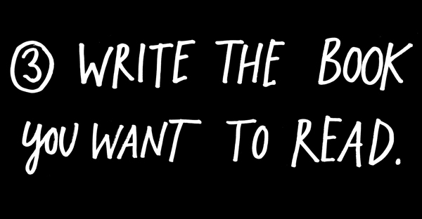
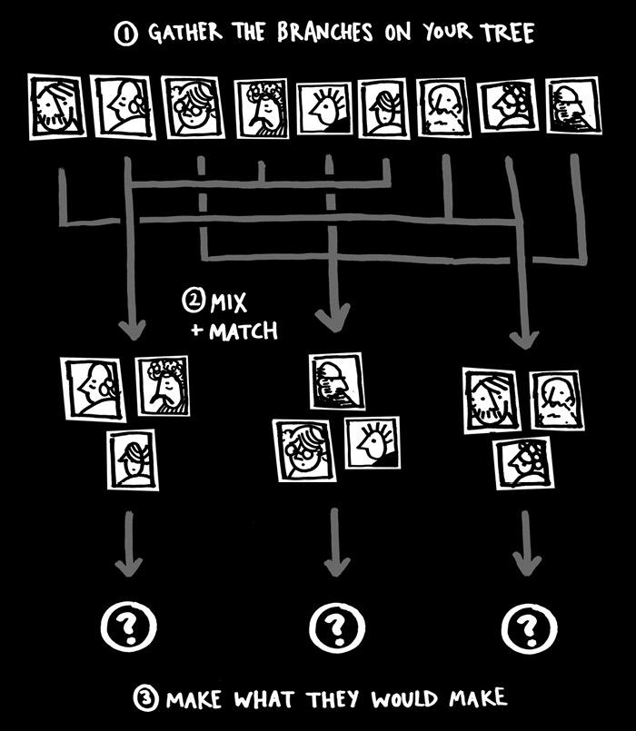
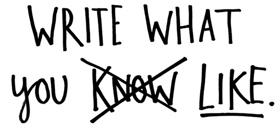
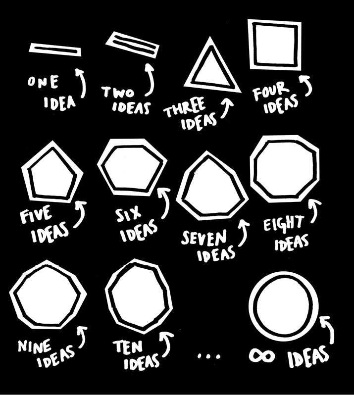

The movie Jurassic Park came out on my tenth birthday. I loved it. The minute I left the theater, I was dying for a sequel, so I sat down the next day at our old PC and typed one out. In my treatment, the son of the game warden eaten by Velociraptors goes back to the island with the granddaughter of the guy who built the park. One of them wants to destroy the rest of the park, the other wants to save it. Of course, they fall in love and adventures ensue.
I didn’t know it at the time, but I was writing what we now call fan fiction—fictional stories based on characters that already exist.
Ten-year-old me saved the story to the hard drive. A few years later, Jurassic Park II finally came out. And it sucked. The sequel always sucks compared to the sequel in our heads.
The question every young writer at some point asks is: “What should I write?” And the standard answer is, “Write what you know.” This advice always leads to terrible stories in which nothing interesting happens.
“My interest in making music has been to create something that does not exist that I would like to listen to. I wanted to hear music that had not yet happened, by putting together things that suggested a new thing which did not yet exist.”
—Brian Eno
We make art because we like art. We’re drawn to certain kinds of work because we’re inspired by people doing that work. All fiction, in fact, is fan fiction.
The best advice is not to write what you know, it’s to write what you like. Write the kind of story you like best—write the story you want to read. The same principle applies to your life and your career: Whenever you’re at a loss for what move to make next, just ask yourself, “What would make a better story?”
Bradford Cox, a member of the band Deerhunter, says that when he was a kid he didn’t have the Internet, so he had to wait until the official release day to hear his favorite band’s new album. He had a game he would play: He would sit down and record a “fake” version of what he wanted the new album to sound like. Then, when the album came out, he would compare the songs he’d written with the songs on the real album. And what do you know, many of these songs eventually became Deerhunter songs.
When we love a piece of work, we’re desperate for more. We crave sequels. Why not channel that desire into something productive?
Think about your favorite work and your creative heroes. What did they miss? What didn’t they make? What could’ve been made better? If they were still alive, what would they be making today? If all your favorite makers got together and collaborated, what would they make with you leading the crew?
Go make that stuff.
The manifesto is this: Draw the art you want to see, start the business you want to run, play the music you want to hear, write the books you want to read, build the products you want to use—do the work you want to see done.
